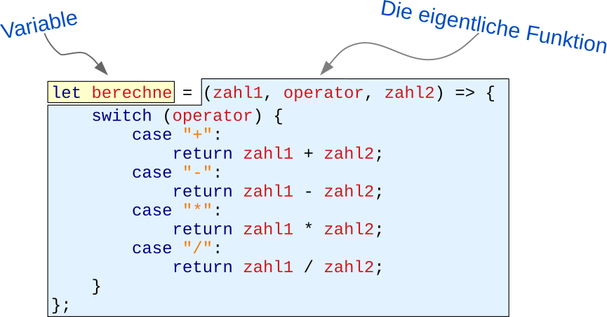

Nachdem du nun HTML und CSS kennst, lernst du hier die Programmiersprache
JavaScript kennen. Neben einer kurzen Einführung, was man damit alles
machen kann, lernst du hier wichtige Grundlagen zur Sprache selbst und
wie du sie einsetzen kannst.
Lernziele dieser Einheit
Nach Abschluss dieser Einheit kannst du …
die Einsatzgebiete von JavaScript innerhalb und außerhalb des World Wide Web beurteilen.
JavaScript direkt im Browser ausprobieren,
ohne einen lokalen Editor starten zu müssen.
das Prinzip der dynamischen, schwachen Typisierung
erklären und die Unterschiede zu Java aufzeigen.
eigene Funktionen in JavaScript implementieren und darin lokale und globale Variablen verwenden.
Rückruffunktionen und
Funktionen höherer Ordnung schreiben.
mit Array und Listen die wichtigsten Datentypen von JavaScript
verwenden.
eigene Daten im JSON-Format codieren.
JavaScript-Code in deine eigenen HTML-Dateien einbinden und damit das
Document Object Model manipulieren.
JavaScript-Code debuggen
und Fehler darin beheben.
Variablen werden in JavaScript nicht wirklich deklariert. Sie entstehen
einfach, sobald man ihnen einen Wert zuweist. Nicht vorhandene Variablen
führen auch nicht zu einem Fehler, sondern liefern immer den Wert
undefined.
Etwas ungewöhnlich ist, dass Variablen automatisch globale Variablen sind,
wenn man ihnen nicht const oder let voranstellt. Hier musst
du also wirklich aufpassen, damit es nicht zu diffizilen, schwer zu findenden
Fehlern kommt. Älterer Code nutzt noch var, neuer Code sollte
stattdessen aber immer let verwenden,
da es die Gültigkeit der Variablen noch mehr eingrenzt. Mit const
kannst du im Gegensatz zu let Konstanten definieren. Eine Variable,
deren Wert nicht neu zugewiesen wird, sollte als Konstante definiert werden.
Kann der Wert überschriben werden, verwende let.
let fisch = "Wanda The Fish";
fisch = 27;
Da JavaScript keine wirkliche Deklaration von Variablen kennt, wird auch ihr
Typ nicht fest vorgegeben. Stattdessen hängt es immer davon ab, was man gerade
in eine Variable reinschreibt. Im obigen Beispiel handelt es sich bei der Variable
erst um einen String und dann um eine Zahl. Das ist zwar nicht schön, aber durchaus
erlaubt.
Java kennt keine globalen Variablen. Jede Variable gilt nur innerhalb der
Klasse oder Methode, in der sie definiert wurde. Dafür müssen Variablen
immer erst deklariert werden, bevor sie verwendet werden können. Üblicherweise
wird den Variablen bei der Deklaration allerdings gleich ein Wert zugewiesen.
Der obige Quellcode hätte daher auch so geschrieben werden können:
Im Gegensatz zu JavaScript wird der Typ einer Variable durch ihre Deklaration
bestimmt. In JavaScript hingegen ergibt sich der Typ aus dem Inhalt der Variable
und kann sich jederzeit ändern. Für das zweite JavaScript-Beispiel gibt es daher
keine wirkliche Entsprechung in Java. Nur eine weit hergeholte Version mit den
so genannten Boxed Types:
Object fisch = new String("Wanda The Fish");
fisch = new Integer(31);
Funktionen und Methoden werden in JavaScript genauso aufgerufen wie in Java.
Nur mit dem einen Unterschied, dass Java keine Funktionen (Methoden ohne Klassen)
kennt.
let startButton = document.getElementById("start");
showGameOverScreen("Game Over", "Nochmal versuchen", true);
Das sieht fast gleich wie bei JavaScript aus. Nur, dass der Variable
startButton ein expliziter Typ mitgegeben werden muss und dass
Java keine Methoden ohne Klassen kennt. Zwar wäre die folgende Zeile
durchaus zulässig:
if (alter < 18) {
…
} else if (alter < 60) {
…
} else {
…
}
Hier gibt es fast gar keine Unterschiede zu Java. Lediglich
den Operator === kennt Java nicht: Er prüft nicht nur, ob
zwei Variablen inhaltlich gleich sind, sondern auch ob sie denselben
Typ haben:
if (42 == "42") {
// Trifft tatsächlich zu
}
if (42 === "42") {
// Trifft nicht zu
}
An diesem Beispiel siehst du auch, dass JavaScript Strings direkt
vergleichen kann. Eine equals()-Methode brauchen
wir hierfür nicht:
let person1 = "Willy";
let person2 = "Alf";
if (person1 === person2) {
…
} else if (person1 != person2) {
…
}
Das switch-Statement hingegen sieht genau wie in Java aus:
switch (event.type) {
case "keydown":
…
break;
case "click":
…
break;
default;
…
}
if (alter < 18) {
…
} else if (alter < 60) {
…
} else {
…
}
if-Abfragen sehen genau wie in JavaScript aus, nur dass es
den ===-Operator nicht gibt und dass zwei Strings über ihre
equals()- bzw. equalsIgnoreCase()-Methoden
verglichen werden müssen.
if (42 == "42") {
// Kann nie zutruffen
}
String person1 = "Willy";
String person2 = "Alf";
if (person1.equals(person2)) {
…
} else if (!person1.equals(person2)) {
…
}
switch/case sieht genau gleich aus:
switch (event.type) {
case "keydown":
…
break;
case "click":
…
break;
default;
…
}
Aus dem Mathematikunterricht kennst du sicher noch die Fakultätfunktion.
Sie ist so definiert, dass sie einer nat√ºrlichen Zahl ùëõ > 0 das
Produkt aller nat√ºrlichen Zahlen von ùëõ ‚Ķ 1 zuordnet. Am einfachsten
lässt sich das an einem Beispiel zeigen:
Alles klar? Deine Aufgabe lautet, eine JavaScript-Funktion zu schreiben,
mit der die Fakultät einer beliebigen Zahl berechnet werden kann. Du
kannst die Funktion dabei entweder rekursiv durch Aufruf von sich selbst
oder iterativ mit einer Schleife programmieren. In jedem Fall solltest
du aber prüfen, ob die übergebene Zahl größer 0 ist und den Wert
NaN¹ zurück liefern, falls nicht.
Zum Ausprobieren, kannst du die Funktion direkt in JS.Scratch
aufrufen. um Beispiel so:
let faktultaet = n => {
return …
};
fakultaet(5); number 120
¹ NaN steht für „Not A Number”.
let fakultaet = n => {
if (n < 1) {
return NaN;
} else if (n == 1) {
return 1;
} else {
return n * fakultaet(n-1);
}
};
Vorsicht: Diese Lösung nutzt Rekursion und kann daher nur für relativ
kleine Zahlen verwendet werden. Ist die Zahl ùëõ zu gro√ü, kommt es
möglicherweiße zu einem Abbruch.
let fakultaet = n => {
if (n < 1) {
return NaN;
}
let ergebnis = 1;
for (let i = 1; i <= n; i++) {
ergebnis *= i;
}
return ergebnis;
};
Diese Lösung nutzt anstelle der Rekursion eine Schleife und funktioniert daher
mit allen Zahlen.
Hinweis:ergebnis *= i
ist dasselbe wie ergebnis = ergebnis * i.
Analog dazu gibt es noch +=, -= und /=.
Schaue dir den folgenden JavaScript-Code und lasse ihn auch mal in
JS.Scratch laufen.
Anschließend beantworte die folgenden Fragen:
let fibonacci = n => {
if (n < 1) return NaN;
ergebnis = 0;
for (let i = n; i >= 1; i--) {
ergebnis += i;
}
return ergebnis;
};
ergebnis = fibonacci(10);
ergebnis1 = fibonacci(20);
a) Welchen Wert hat die Variable ergebnis nach Aufruf der Funktion
fibonacci(10)?
b) Welchen Wert hat die Variable ergebnis nach Aufruf der Funktion
fibonacci(20)?
c) Wie lässt sich dieser Fehler korrigieren?
d) Wie lässt sich innerhalb einer Funktion kenntlich machen, dass eine
globale Variable angesprochen werden soll?
a) Wie erwartet bekommt die Variable den Wert 55 zugewiesen.
b) Die Variablen ergebnis und ergebnis1 haben beide den
Wert 210. Das war so nicht gewollt, da das Ergebnis nur in
ergebnis1 gespeichert werden sollte.
c) In der Funktion muss ergebnis = 0
durch let ergebnis = 0 oder
const ergebnis = 0 ersetzt werden:
let fibonacci = n => {
if (n < 1) return NaN;
let ergebnis = 0;
for (let i = n; i >= 1; i--) {
ergebnis += i;
}
return ergebnis;
};
d) Durch Zugriff auf das window-Objekt, zum Beispiel so:
window.ergebnis = 55;
Aufgabe 3: Ein kleines JavaScript-Quiz
Was bewirken die folgenden Quellcode-Schnippsel?
a) let ergebnis = 42;
Deklaration einer globalen Variable mit dem Wert 42 (überall sichtbar)
Deklaration einer lokalen Variable mit dem Wert 42 (nur in der aktuellen Funktion sichtbar)
Prüfung, ob die Variable ergebnis den Wert 42 enthält
b) ergebnis = 42;
Deklaration einer globalen Variable mit dem Wert 42 (überall sichtbar)
Deklaration einer lokalen Variable mit dem Wert 42 (nur in der aktuellen Funktion sichtbar)
Prüfung, ob die Variable ergebnis den Wert 42 enthält
c) multiply = (a, b) => a * b;
Deklaration der beiden Variablen a und b und anschließende Multiplikation der beiden Werte
Definition einer Liste mit den Werten a und b mit anschließender Multiplikation der beiden Werte
Definition einer Funktion, die zwei Zahlen miteinander multipliziert
d) ergebnis = 42; ergebnis = "zweiundvierzig";
Die Variable ergebnis ist erst ein Integer, dann ein String
Umwandlung des Werts in der Variablen ergebnis von einem String in einen Integer
Syntaxfehler: Das ist in JavaScript so nicht erlaubt
Lösung: 2, 1, 3, 1
Funktionen – Nichts Besonderes
Anatomie einer Funktionsdefinition

Rückruffunktionen für Events
Häufig erwartet eine Funktion eine andere Funktion als Parameter, um
diese bei Eintreten eines Ereignisses aufrufen zu können. Die aufgerufene
Funktion nennt man Rürckruffunktion oder auch Callback:
let callback = () => { … };
let div = document.getElementById("theater");
div.addEventListener("click", callback);
Lässt sich verkürzen zu:
let div = document.getElementById("theater");
div.addEventListener("click", () => { … });
Funktionen höherer Ordnung
Funktionen höherer Ordnung sind Funktionen, die als Rückgabewert eine
neue Funktion liefern:
let erzeugeFunktion = name => {
return () => `Hello, ${name}!`;
}
let begruesseKitty = erzeugeFunktion("Kitty");
console.log(begruesseKitty());
Arrays in JavaScript beinhalten einfach eine beliebige Anzahl von Einträgen.
Üblicherweise haben alle Einträge denselben Datentyp, dies ist aber kein Muss.
Um einen Eintrag anzusprechen, muss man seinen Index kennen, der genau wie in
Java bei 0 beginnt.
let einkaufsliste = ["Brot", "Milch", "Kaffee", "Nutella",];
let lottozahlen = [3, 12, 24, 28, 31,];
Im folgenden Beispiel sieht man, dass ein Array wie wild alle möglichen Datentypen
mischen kann. Das Array beinhaltet zum Beispiel die Namen zweier Spieler sowie drei
weitere Arrays, die zusammen ein Tic-Tac-Toe-Spielfeld simulieren, und ein Boolean.
Um einen Eintrag aus einem Array zu holen, benötigt man seinen Index. Zum Beispiel
einkaufsliste[1]. Mit einer einfachen
for-Schleife oder der forEach-Methode kann man alle
Einträge eines Arrays abarbeiten.
for (let i = 0; i < einkaufsliste.length; i++) {
console.log(einkaufsliste[i]);
}
lottozahlen.forEach(zahl => {
console.log(zahl);
})
Arrays in Java beinhalten ebenfalls eine beliebige Anzahl von Einträgen, die über
ihren Index angesprochen werden. Jedoch müssen alle Inhalte denselben Datentyp
besitzen. Man kann zum Beispiel nicht ohne weiteres Strings und Integer in einem
Array mischen. Außerdem ist auch die Syntax viel komplizierter.
Der Zugriff erfolgt entweder per Index oder über eine For-Each-Schleife:
for (int i = 0; i < einkaufsliste.length; i++) {
System.println(einkfaufsliste[i]);
}
for (String eintrag : einkaufsliste) {
System.println(eintrag);
}
Seit Java 8 kann man auch eine Lambda-Funktion nutzen:
Die direkte Verwendung von Arrays ist in Java allerdings schon lange eher
unerwünscht. Stattdessen sollte man eine der verschiedenen Collection-Klassen
verwenden, zum Beispiel eine Linked List:
Objekte in JavaScript werden auch Dictionaries genannt. Sie dienen einfach der
Gruppierung mehrerer Werte zu einem Datensatz. Die Einträge eins Dictionaries
werden daher über einen frei wählbaren Namen angesprochen und haben auch keine
feste Reihenfolge.
Die Syntax, um einen einzelnen Wert auszulesen ist dieselbe wie bei einer Liste,
nur mit einem Namen anstelle des Index:
let vorname = mulder["vorname"];
mulder["vorgesetzter"] = "Assistant Director Walter Skinner";
Da Dictionaries und Objekte exakt dasselbe sind, kann man anstelle der eckigen
Klammern auch einfach einen Punkt verwenden:
let vollerName = `${mulder.vorname} ${mulder.nachname}`
mulder.partner = "Dana Katherine Scully";
Auch über die Einträge eines Dictionaries kann man iterieren. Der in-Operator
liefert hierfür die Namen aller Einträge zurück:
for (let key in mulder) {
console.log(mulder[key]);
}
Objekte lassen sich in Java nicht direkt definieren. Man muss immer erst
eine Klasse schreiben und diese dann instantiieren:
public class Person {
public String vorname = "";
public String nachname = "";
public String beruf = "";
public String vorgesetzter = "";
public String partner = "";
}
Person mulder = new Person();
mulder.vorname = "Fox";
mulder.nachname = "Mulder";
mulder.beruf = "Special Agent FBI";
mulder.vorgesetzter = "Walter Skinner";
mulder.partner = "Dana Scully";
Allerdings gibt es mit der Map etwas ähnliches wie Dictionaries.
Denn eine Map bildet einen beliebigen Schlüsselwert auf ein beliebiges
Objekt ab. Dictionaries entsprechen daher am ehestem folgendem Konstrukt in Java:
Indem man Arrays und Dictionaries kombiniert, kann man beliebig komplexe
Datenstrukturen zusammensetzen. Das Format ist dabei so beliebt, dass es
auch unter dem Namen
JSON¹ als eigenständiges Datenformat existiert und unter anderem zum
Datenaustausch mit dem Server genutzt werden kann. Hier ein Beispiel mit
einem
alten Disney-Klassiker: ü¶Å
Will man nun den Namen von Angela Lansbury auslesen, kann man mit folgenden
Ausdrücken darauf zugreifen:
dieTollkuehneHexe["darsteller"][0]
dieTollkuehneHexe.darsteller[0]
Natürlich kann man auch ein Array mit Dictionaries drin definieren:
let filme = [
{
titel: "Die tollkühne Hexe in ihrem fliegenden Bett",
land: "USA",
jahr: 1971,
darsteller: [
"Angela Lansbury",
"David Tomlinson",
"Roddy McDowall",
…
]
},
{
titel: "Spaceballs",
land: "USA",
jahr: 1987,
darsteller: [
"Mel Brooks",
"John Candy",
"Rick Moranis",
…
]
},
{
titel: "M - Eine Stadt sucht einen Mörder",
land: "Deutschland",
jahr: 1931,
darsteller: [
"Peter Lorre",
"Inge Landgut",
"Ellen Widmann",
…
]
}
];
Du siehst, das ganze ist wahnsinnig flexibel und auch noch einfach zu schreiben. üëç
¹ JavaScript Object Notation
Vergiss es. Ohne Klassen l√§uft in Java nichts. üòõ Diese m√ºssen wir erst einmal
definieren. Zum Glück speichern wir bei den Darstellern nur die Namen. Denn sonst
hätten wir dafür auch nochmal eine Klasse gebraucht. Will man es besonders schön
machen, muss man sogar für jedes Attribut eine Setter- und eine Getter-Methode
anlegen.
import java.util.ArrayList;
import java.util.List;
public class Film {
private String titel = "";
private String originalTitel = "";
private String land = "";
private String originalSprache = "";
private int jahr = 0
private List<String> darsteller = new ArrayList<>();
public void setTitel(String titel) {
this.titel = titel;
}
public String getTitel() {
return this.titel;
}
… gefühlte 1000 Zeilen später …
}
Dann können wir endlich ein Objekt erzeugen:
Film dieTollkuehneHexe = new Film();
dieTollkuehneHexe.setTitel("Die tollkühne Hexe in ihrem fliegenden Bett");
dieTollkuehneHexe.setOriginalTitel("Beknobs and Broomsticks");
dieTollkuehneHexe.setLand("USA");
dieTollkuehneHexe.setOriginalSprache("Englisch");
dieTollkuehneHexe.setJahr(1971);
dieTollkuehneHexe.darsteller.add("Angela Lansbury");
dieTollkuehneHexe.darsteller.add("David Tomlinson");
dieTollkuehneHexe.darsteller.add("Roddy McDowall");
dieTollkuehneHexe.darsteller.add("Sam Jaffe");
…
Natürlich hätten wir noch ein paar Sachen vereinfachen können. Zum Beispiel indem
wir der Klasse einen gescheiten Konstruktor und ein paar Hilfsmethoden spendiert
hätten. Weniger Quellcode wäre es deshalb natürlich nicht geworden. Die Klasse
Film wäre aber angenehmer zu verwenden gewesen (worauf man immer achten
sollte üòå).
Aufgabe 4: Verstehst du das?
Welches Ergebnis liefert der folgende Quellcode?
caesar = [
() => "Veni, Vidi, Vici", // Ich kam, sah und siegte
() => "Alea iacta est", // Die Würfel sind gefallen
() => "Cras legam", // Morgen werde ich es lesen
];
zusammenfuegen = (string, callback) => {
return string + ": " + callback();
}
ergebnis = zusammenfuegen("Cäsar", caesar[1]);
L√∂sung: ‚ÄûC√§sar: Alea iacta est‚Äù üé≤üé≤
Aufgabe 5: Ein kleines JSON-Quiz
Was bewirken die folgenden Quellcode-Schnippsel?
a) let movie = {id: 1, name: "Moon", year: 2009};
Definition einer Liste mit drei Werten
Definition eines Dictionaries mit drei Werten
Definition dreier Variablen
b) let favorites = ["Toy Story", "Anchorman", "Gravity", "The Founder"];
Definition eines Dictionaries mit vier Werten
Definition einer Liste mit vier Werten
Definition einer Methode mit vier Parametern
c) let cds = [{name: "Tracker", year: 2015}, {name: "Privateering", year: 2013}];
Angenommen du hast eine Datenbank mit folgenden Tabellen. Wie können
dieselben Daten in JavaScript beschrieben werden?
Alben
ID
Albumtitel
Künstler
Jahr
1
Tracker
Mark Knopfler
2015
2
X
Ed Sheran
2014
3
Liquid Spirit
Gregory Porter
2013
Titel
Album ID
Track
Songtitel
1
1
Laughs And Jokes And Drinks And Smokes
1
2
Basil
2
1
One
2
2
I'm A Mess
3
1
No Love Dying
…
…
…
a) Schreibe eine JavaScript/JSON-Datei, die exakt dieselben Daten enthält.
Anstelle von zwei Listen solltest du jedoch nur eine Liste haben, in der
sowohl die Alben als auch ihre Titel enthalten sind.
b) Wie kann anschließend auf den Songtitel „Basil” zugegriffen werden?
a) Anmerkung: Das ist nur eine mögliche Lösung. Statt des Arrays auf oberster Ebene
wäre auch ein Dictionary denkbar, bei dem die Album-ID als Schlüsselwert benutzt wird.
Die Songtitel sollten sinnvollerweise auf jeden Fall in einem Array gespeichert werden.
Das Array könnte aber anstatt der Strings auch Dictionaries enthalten, so dass zu jedem
Songtitel noch weitere Daten gespeichert werden könnten.
<!DOCTYPE html>
<html>
<head>
<title>JavaScript und HTML in einer Datei</title>
<meta charset="utf-8" />
<!-- Stylesheet und JavaScript nun in eigenen Dateien -->
<link rel="stylesheet" href="style.css" />
<script src="button-script.js"></script>
</head>
<body>
<button id="klick-mich-button">Klick mich</button>
<div id="ergebnis"></div>
</body>
</html>
Lade dir den Quellcode
zu dieser Aufgabe herunter und schaue dir die HTML-Datei aus dem
Verzeichnis Aufgabe im Browser an. Es handelt sich um ein einfaches
Memoryspiel.
Doch leider läuft das Spiel noch nicht richtig. Wenn man eine Karte anklickt,
passiert noch nichts, obwohl in der Datei script.js in Zeile 67 ein
entsprechender Event Listener registriert wird. Um diesen Fehler zu finden,
solltest du die Funktionen onCardClicked und startGame
debuggen. Der Fehler ist dann ziemlich offensichtlich. üò∞
Wenn das Umdrehen der Karten klappt, wirst du feststellen, dass das Spiel
immer noch nicht läuft. Eigentlich sollte beim Aufklappen der zweiten Karte
geprüft werden, ob die beiden Karten übereinstimmen und nur, wenn das der Fall
ist, sollten die Karten offen liegen bleiben. Stattdessen bleiben die Karten
aber einfach immer offen, auch wenn sie nicht identisch sind. Auch hier wirst
du wohl debuggen m√ºssen. Aber keine Angst, die Korrektur ist ziemlich einfach. üôà
Das sieht noch nicht ganz richtig aus …
Oh je! Wenn du hier schauen musst, hast du die beiden Fehler nicht gefunden. üòî
Na gut, dann wollen wir dir mal weiter helfen:
In Zeile 51 fehlt ein s. Es muss "#cards > img" statt
"#card > img" heißen.
Die Aufrufe in den Zeilen 103 und 104 sind vertauscht. Es muss erst die
Funktion flipCard(card)
aufgerufen werden, um die angeklickte Karte umzudrehen. Erst dann können
die Karten mit compareCards(card)
verglichen werden.
Zugriff auf vorhandene HTML-Elemente
Auf HTML-Elemente wird über das Document Object Model zugegriffen.
Das document-Objekt dient hierfür als zentraler Einstiegspunkt.
let mainContentElement = document.getElementById("main-content");
Gibt ein einzelnes HTML-Element mit der gesuchten ID (Attribut id) zurück. Gibt es kein
solches Element, ist die Antwort stattdessen null.
let firstImage = document.querySelector("main > img:first-child");
Führt den übergebenen CSS-Selektor aus und gibt das erste HTML-Element zurück, auf das die Suche zutrifft.
Wurde kein passendes Element gefunden, ist die Antwort ebenfalls null.
<!DOCTYPE html>
<html>
<head>
<meta charset="utf-8" />
<title>Einzelne DOM-Elemente auslesen</title>
</head>
<body>
<h1>Einzelne DOM-Elemente auslesen</h1>
<p id="hinweis">
Klicke einen der beiden Knöpfe.
</p>
<button onclick="getElementByIdClicked()">Element mit ID „hinweis”</button>
<button onclick="querySelectorClicked1()">Das erste <h1></button>
<button onclick="querySelectorClicked2()">Das erste <h2></button>
<script>
getElementByIdClicked = () => {
let hinweis = document.getElementById("hinweis");
alert(hinweis.outerHTML);
}
querySelectorClicked1 = () => {
let heading = document.querySelector("h1")
alert(heading.outerHTML);
}
querySelectorClicked2 = () => {
let heading = document.querySelector("h2")
// heading ist null !!
alert(heading);
}
</script>
</body>
</html>
let containerElements = document.getElementsByClassName("container");
Liefert eine Liste aller HTML-Elemente, denen die Klasse container zugewiesen wurde.
let allThumbnails = document.querySelectorAll("img.thumbnail");
Liefert alle <img>-Elemente, die gleichzeitig noch die
Klasse thumbnail besitzen. Die Syntax für den Abfrageparameter ist dieselbe wie für
CSS-Selektoren.
let firstThumbnail = allThumbnails[0]; allThumbnails.forEach(element => …);
Auch wenn man es zunächst denken würde, aber das Ergebnis der Methoden getElementsByClassName
und querySelectorAll ist kein Array. getElementsByClassName liefert eine
HTMLCollection und querySelectorAll ein NodeList-Objekt. Beide
verhalten sich ähnlich wie Arrays, besitzen aber nicht ganz dieselben Methoden. Die forEach-Methode
zum Beispiel funktioniert nur beim Ergebnis von querySelectorAll. üòï
<!DOCTYPE html>
<html>
<head>
<meta charset="utf-8" />
<title>Einzelne DOM-Elemente auslesen</title>
</head>
<body>
<h1>Mehrere DOM-Elemente auslesen</h1>
<ol>
<li class="erledigt">
Einführung in die Vorlesung
</li>
<li class="erledigt">
Grundlagen des Web
</li>
<li class="erledigt">
Einstieg in HTML
</li>
<li class="in-arbeit">
Layouts erstellen mit CSS
</li>
<li class="in-arbeit">
Responsive Webdesign
</li>
</ol>
<button onclick="getElementsByClassNameClicked()">Alle mit Klasse „erledigt”</button>
<button onclick="querySelectorAllClicked1()">Alle li.in-arbeit</button>
<button onclick="querySelectorAllClicked2()">Alle li.nicht-in-arbeit</button>
<script>
getElementsByClassNameClicked = () => {
let result = document.getElementsByClassName("erledigt");
showResult(result);
}
querySelectorAllClicked1 = () => {
let result = document.querySelectorAll("li.in-arbeit");
showResult(result);
}
querySelectorAllClicked2 = () => {
let result = document.querySelectorAll("li.nicht-in-arbeit");
showResult(result);
}
showResult = domNodes => {
console.log(domNodes);
let text = `Anzahl gefunden: ${domNodes.length}\n\n`;
for (let i = 0; i < domNodes.length; i++) {
text += domNodes.item(i).outerHTML + "\n\n";
}
alert(text)
}
</script>
</body>
</html>
Jedes HTML-Element kann eine Reihe von Ereignissen auslösen, auf die man mit JavaScript
reagieren kann. Hierfür besitzt jedes Element die Methode addEventListener.
Der erste Parameter ist der Name des Ereignisses, der zweite Parameter eine Funktion, die
bei Eintreten des Ereignisses aufgerufen wird.
üéì Merke: Funktionen sind vollwertige Objekte und k√∂nnen daher direkt als Parameter
übergeben werden.
üéì Achtung: Da JavaScript den gesamten Code in einem einzigen Thread ausf√ºhrt, d√ºrfen
die Event-Handler-Funktionen nicht lange laufen. Sonst wird die gesamte Seite ruckelig, weil
im selben Thread auch die Bildschirmausgabe erzeugt wird. ⏳
Ereignis
Bedeutung
click
Einfacher Linksklick mit der Maus oder dem Touchscreen
mouseover
Der Mauszeiger befindet sich innerhalb des Elements.
mouseout
Der Mauszeiger befindet sich nicht mehr über dem Element.
keydown
Beginn eines Tastendrucks auf der Tastatur. Die Taste wurde herunter gedrückt.
keyup
Ende eines Tastendrucks auf der Tastatur. Die Taste wurde wieder losgelassen.
Eine gute Übersicht gibt es im
Mozilla Developer Network. Da der Browser aber keine komplexen Gesten erkenn kann (Swipe Left,
Double Tap, …) muss man hierfür externe Bibliotheken wie
Hammer.JS verwenden.
Jeder Event Listener bekommt als ersten Parameter ein Event-Objekt übergeben.
In event.target findet sich dann zum Beispiel
das HTML-Element, das das Ereignis ausgelöst hat. Es gibt aber noch weitere, interessante
Methoden, die gelegentlich nützlich sein können.
window.addEventListener("load", …)
Ein besonders häufig genutztes Ereignis ist das load-Ereignis des window-Objekts.
Es zeigt an, dass die HTML-Seite komplett geladen wurde und nun auf das Document Object Model zugegriffen
werden kann. Denn der Quellcode aller <script>-Elemente wird
sofort ausgeführt, sobald der Browser sie findet. In der Regel ist die Seite zu diesem Zeitpunkt aber
noch gar nicht komplett geladen und Zugriffe auf das Document Object Model schlagen fehl.¹
Will man daher beim Laden der Seite zuverlässig auf das Document Object Model zugreifen, muss man erst
das load-Ereignis abwarten und in dessen Event Handler alle weiteren Schritte ausführen.
¹ Man nennt das eine „Race Condition”, da der JavaScript-Code mit dem Browser um die Wette läuft.
üèÉüèÉ
<!DOCTYPE html>
<html>
<head>
<meta charset="utf-8" />
<title>Auf Ereignisse reagieren</title>
<style>
#preview {
display: block;
width: 25em;
padding: 0.25em;
background: #F0F0F0;
border: 1px solid #A0A0A0;
margin-bottom: 1em;
}
</style>
</head>
<body>
<h1>Auf Ereignisse reagieren</h1>
<img id="preview" />
<button id="next-button">Weiter</button>
<button id="prev-button">Zurück</button>
<script>
window.addEventListener("load", () => {
let previewElement = document.getElementById("preview");
let nextButton = document.getElementById("next-button");
let prevButton = document.getElementById("prev-button");
let images = [
"img/preview1.jpg",
"img/preview2.jpg",
"img/preview3.jpg"
];
let index = -1;
switchImage = direction => {
index += direction;
if (index >= images.length) index = 0;
if (index < 0) index = images.length - 1;
previewElement.src = images[index];
}
switchImage(1);
nextButton.addEventListener("click", () => switchImage(1));
prevButton.addEventListener("click", () => switchImage(-1));
});
</script>
</body>
</html>
// Der Event Handler für das load-Event wird erst ausgeführt, wenn die
// Seite geladen und der DOM-Baum komplett verfügbar ist.
window.addEventListener("load", () => {
// Lokale Variablen mit den HTML-Elementen der Seite
let buttonPlusOne = document.getElementById("button-plus-one");
let buttonMinusOne = document.getElementById("button-minus-one");
let buttonStartStop = document.getElementById("button-start-stop");
let statusElement = document.getElementById("status");
let counterElement = document.getElementById("counter");
// Aktueller Zählerstand
let counter = 0;
let running = false;
let lastUpdate = 0;
// Event Handler für den +1 Button
buttonPlusOne.addEventListener("click", () => {
counter++;
});
// Event Handler für den -1 Button
buttonMinusOne.addEventListener("click", () => {
if (counter > 0) {
counter--;
}
});
// Event Handler für den Start/Stop-Button
buttonStartStop.addEventListener("click", () => {
running = !running;
if (running) lastUpdate = Date.now();
});
// Funktion, die kontinuierlich die Anzeige aktualisiert
// und jede Sekunde den Zähler runterzählt, wenn die Stoppuhr läuft
let updateDisplay = () => {
// Jede Sekunde den Zähler runterzählen
let now = Date.now();
if (now - lastUpdate >= 1000) {
lastUpdate = now;
if (running && counter > 0) {
counter--;
} else {
running = false;
}
}
// Aktuellen Status der Stoppuhr anzeigen
counterElement.textContent = counter;
if (running) {
statusElement.textContent = "Uhr läuft …";
} else {
statusElement.textContent = "Gestoppt";
}
// Sicherstellen, dass die Funktion kontinuierlich aufgerufen wird
window.requestAnimationFrame(updateDisplay);
};
window.requestAnimationFrame(updateDisplay);
});
Änderungen an der DOM-Struktur vornehmen
Die Struktur des Document Object Model kann jederzeit verändert werden.
Der Browser stellt die Änderungen sofort auf dem Bildschirm dar.
Jedes HTML-Element besitzt in JavaScript das Attribut style zur direkten
Beeinflussung seiner Darstellung. Das style-Attribut besitzt für jede
CSS-Anweisung ein Unterelement, mit dem Wert der entsprechenden Anweisung ausgelesen
oder überschrieben werden kann.
CSS-Anweisungen, die im Stylesheet mit Bindestrich geschrieben werden (zum Beispiel
font-size), werden in JavaScript zusammen als „Camel Case„ geschrieben
(also fontSize).
alertElement.classList.add("visible"); alertElement.classList.remove("warning"); if (alertElement.classList.contains("fade-in")) { … }
Nicht nur innerhalb des HTML-Codes können jedem Element beliebig viele Klasse zugeordnet
werden (über das class-Attribut, zum Beispiel so:
<div class="container blue-background").
Dasselbe geht auch über das classList-Attribut in JavaScript. Es handelt
sich dabei um ein Objekt mit den oben gezeigten Methoden, um weitere Klassen hinzuzufügen,
zu entfernen oder zu prüfen, ob sie vorhanden sind.
Im Zusammenhang mit einem guten CSS-Stylesheet ist diese Variante der direkten Manipulation
des style-Attributs vorzuziehen. Denn nach jeder Änderung der classList
wertet der Browser die Stylesheets neu aus und macht sich ergebende Änderungen an der Darstellung
sofort sichtbar. Auf wunsch sogar animiert, wenn das Stylesheet die transition-
oder animation-Anweisung enthält.
<!DOCTYPE html>
<html>
<head>
<meta charset="utf-8" />
<title>Aussehen verändern mit JavaScript</title>
<style>
img {
display: block;
width: 24em;
transition: width 0.5s;
padding: 0.25em;
background: #F0F0F0;
border: 1px solid #A0A0A0;
margin-bottom: 1em;
}
body {
transition: background-color 0.5s, color 0.5s;
}
body.dark {
background: black;
color: white;
}
body.dark img {
background: #A0A0A0;
border-color: white;
}
</style>
</head>
<body>
<h1>Aussehen verändern mit JavaScript</h1>
<img src="img/preview1.jpg" />
<button onclick="resizeImage(2)">Größer</button>
<button onclick="resizeImage(-2)">Kleiner</button>
<button onclick="toggleBackground(event)">Licht aus!</button>
<script>
// Am Anfang ist das Bild laut Stylesheet 24em breit
let width = 24;
// Funktion zum Vergrößern oder Verkleinern des Bilds
let resizeImage = delta => {
width += delta;
width = Math.max(width, 10);
let imageElement = document.querySelector("img");
imageElement.style.width = width + "em";
};
// Funktion zum Umschalten des Hintergrunds
let toggleBackground = event => {
let bodyElement = document.querySelector("body");
if (bodyElement.classList.contains("dark")) {
bodyElement.classList.remove("dark");
event.target.textContent = "Licht aus!";
} else {
bodyElement.classList.add("dark");
event.target.textContent = "Licht an!";
}
};
</script>
</body>
</html>
alertElement.innerHTML = "<b>Wichtige Frage:</b> Kennen Sie schon unsere Sparangebote?"
Die einfachste Art, den Inhalt eines Elements zu verändern, ist seinem innerHTML-Attribut
einen neuen Wert zuzuweisen. Dadurch wird der Inhalt des Elements so verändert, als stünde der neue
Wert innerhalb des Elements direkt im HTML-Code. Auf diese Weise können daher auch weitere HTML-Elemente
in die Seite eingefügt werden.
Aus Sicherheitsgründen sollte man aber aufpassen, wie sich der neue Wert für innerHTML
zusammensetzt. Werden dabei Inhalte von nicht vertrauenswürdigen Quellen zugelassen (zum Beispiel
Benutzereingaben), kann dies eine
DOM-based Cross Site Scripting-L√ºcke verursachen. üòî
alertElement.textContent = "Bitte akzeptieren Sie erst die AGBs.";
Bist du dir sicher, dass der neue Inhalt eines Elements keine HTML-Anweisungen beinhalten darf, solltest
du anstelle von innerHTML das textContent-Attribut verwenden. Denn hier werden
alle spitzen Klammern als Text interpretiert und genau so auf der Seite angezeigt. Die Gefahr für
Sicherheitslücken ist dadurch deutlich geringer.
<!DOCTYPE html>
<html>
<head>
<meta charset="utf-8" />
<title>Inhalte verändern mit JavaScript</title>
<style>
#preview {
display: inline-block;
margin-bottom: 1em;
border: 1px solid black;
padding: 0.25em;
background: #303030;
color: #87AE87;
}
</style>
</head>
<body>
<h1>Inhalte verändern mit JavaScript</h1>
<div id="preview"></div>
<br />
<button onclick="setInnerHtml()">innerHTML setzen</button>
<button onclick="setTextContent()">textContent setzen</button>
<button onclick="clearPreview()">Vorschau zurücksetzen</button>
<script>
let previewElement = document.getElementById("preview");
let newContent = "<ol>\n"
+ " <li>Asterix der Galier</li>"
+ " <li>Asterix und Kleopatra</li>"
+ " <li>Asterix erobert Rom</li>"
+ " <li>Asterix - Sieg über Cäsar</li>"
+ " <li>Asterix bei den Briten</li>"
+ " <li>Asterix - Operation Hinkelstein</li>"
+ " <li>Asterix in Amerika</li>"
+ " <li>Asterix und die Wikinger</li>"
+ " <li>Asterix im Land der Götter</li>"
+ "</ol>\n";
let setInnerHtml = () => previewElement.innerHTML = newContent;
let setTextContent = () => previewElement.textContent = newContent;
let clearPreview = () => previewElement.innerHTML = "";
</script>
</body>
</html>
let pElement = document.createElement("p"); let pContent = document.createTextNode("Es war einmal vor langer, langer Zeit …");
Auf hoch offiziellem Wege, ohne dabei die Attribute innerHTML und textContent
zu benutzen, neue Elemente erzeugen kannst du mit diesen beiden Methoden. Sie erzeugen ein neues HTML-Element
bzw. einen Textknoten (enthält nur Text ohne HTML-Code), die du in das Document Object Model einfügen kannst,
um sie anzuzeigen.
pElement.appendChild(pContent);
Jedes Element besitzt daher die Methode appendChild, mit der ihm weitere Unterelemente
hinzugefügt werden können. Handelt es sich dabei um bereits vorhandene Elemente, die schon im Dokument
vorhanden sind, müssen sie erst aus dem Dokument entfernt werden, bevor sie neu eingefügt werden können.
let pElement = pContent.parentNode;
Über das Attribut parentNode kommt man immer von einem Element zu seinem übergeordneten Elternelement.
Und hier siehst du, wie du auf die Kindelemente eines HTML-Elements zugreifen kannst. Hier gilt
wieder, dass es sich bei childNodes um ein NodeList-Objekt und nicht
um ein vollwertiges Array handelt.
pElement.removeChild(pContent);
Und last but not least, haben wir hier ein wunderschönes Exemplar der removeChild-Methode.
Wie der Name bereits sagt, wird damit ein Element aus der DOM-Struktur entfernt. Dementsprechend
verschwindet es dann auch vom Bildschirm und kann bei Bedarf an anderer Stelle wieder eingefügt werden.
Kennst du nur das Element selbst, dass du entfernen willst (hier pElement), kannst du es über
folgendem Umweg entfernen:
pElemenet.parentNode.removeChild(pElement);
<!DOCTYPE html>
<html>
<head>
<meta charset="utf-8" />
<title>Die DOM-Objektstruktur bearbeiten</title>
<style>
#preview > div {
display: inline-block;
border: 1px solid #A0A0A0;
background: #F0F0F0;
padding: 0.3em;
box-shadow: 2px 2px 4px rgba(0,0,0,0.4);
margin-right: 1em;
margin-bottom: 1em;
}
#preview > div:last-child {
margin-right: 0;
}
#preview > div > img {
display: block;
}
</style>
</head>
<body>
<h1>Die DOM-Objektstruktur bearbeiten</h1>
<div id="preview"></div>
<div id="html-code"></div>
<br />
<button onclick="createContent()">Inhalt generieren</button>
<button onclick="removeContent()">Inhalt verwerfen</button>
<script>
let previewElement = document.getElementById("preview");
let htmlCodeElement = document.getElementById("html-code");
let images = [
{src: "img/preview1.jpg", text: "Küste in Egmont, British Columbia"},
{src: "img/preview2.jpg", text: "Boote an der Küste Egmonts"},
{src: "img/preview3.jpg", text: "Kajaks auf dem Skookumchuk in Egmont"},
];
// Funktion zum Generieren der Inhalte
let createContent = () => {
// Alten Inhalt entfernen
removeContent();
// Bilder mit Beschreibung einfügen
images.forEach(image => {
let divElement = document.createElement("div");
previewElement.appendChild(divElement);
let imgElement = document.createElement("img");
imgElement.src = image.src;
divElement.appendChild(imgElement);
let txtNode = document.createTextNode(image.text);
divElement.appendChild(txtNode);
});
// Generierten HTML-Code anzeigen
htmlCodeElement.innerHTML = "Erzeugter HTML-Code:<br />";
let preElement = document.createElement("pre");
htmlCodeElement.appendChild(preElement);
let textNode = document.createTextNode(previewElement.innerHTML);
preElement.appendChild(textNode);
};
// Funktion zum Entfernen der Inhalte
let removeContent = () => {
previewElement.innerHTML = "";
htmlCodeElement.innerHTML = "";
};
</script>
</body>
</html>
Der Haushund (Canis lupus familiaris) ist ein Haustier und wird als Heim- und Nutztier gehalten. Seine wilde Stammform ist der Wolf, dem er als Unterart zugeordnet wird. Wann die Domestizierung stattfand, ist umstritten; wissenschaftliche Schätzungen variieren zwischen 15.000 und 100.000 Jahren vor unserer Zeit.
Im engeren Sinn bezeichnet man als Haushund die Hunde, die überwiegend im Haus gehalten werden, und kennzeichnet damit also eine Haltungsform. Historisch wurde ein Hund, der zur Bewachung des Hauses gehalten wird, als Haushund bezeichnet. Eine weitere Verwendung des Begriffs ist die Einschränkung auf sozialisierte (Haus-)Hunde, also Hunde, die an das Zusammenleben mit Menschen in der menschlichen Gesellschaft gewöhnt und an dieses angepasst sind. Damit wird der Haushund abgegrenzt gegen wild lebende, verwilderte oder streunende Hunde, die zwar auch domestiziert, aber nicht sozialisiert sind.
Der Dingo ist ebenfalls ein Haushund, wird jedoch provisorisch als eigenständige Unterart des Wolfes geführt.
Zu den kleinsten anerkannten Hunderassen gehört der Chihuahua (FCI-Nr. 218) mit einem Gewicht von 0,5 bis 3,0 kg und einer Widerristhöhe von unter 20 cm; zu den größten Hunderassen zählen die Deutsche Dogge (FCI-Nr. 235) mit einer Widerristhöhe von mindestens 80 cm bei Rüden und der Irish Wolfhound (FCI-Nr. 160) mit bis zu 95 cm. Zu den seltenen Rassen zählt der Curly Coated Retriever oder auch der aus chinesischer Abstammung hervorgehende und seit mehr als 2000 Jahren dokumentierte Shar Pei.
Die richtige Ernährung ist wichtig
Hunde sind, wie Wölfe, in der Lage, ihre Ernährung in Grenzen an das Nahrungsangebot anzupassen. Schon Wölfe ernähren sich nicht ausschließlich von Beutetieren (wobei diese, weitgehend vollständig gefressen, bereits pflanzliche Nährstoffe enthalten), sondern fressen – je nach Futterangebot – auch pflanzliche Nahrung wie Wurzeln, Blätter, Gräser oder Früchte. Im Verlaufe seines Zusammenlebens mit dem Menschen hat sich der Hund zunehmend an dessen Ernährung angepasst und wurde zum Allesfresser. Fleisch als alleiniges Futtermittel für Hunde ist daher unangemessen.
Eine vollwertige Ernährung der Hunde erfolgt am einfachsten mit qualitativ hochwertigem (industriell gefertigtem) Hundefutter. Diese Fütterung versorgt die Tiere mit allen essentiellen Nahrungsbestandteilen. Manche Hundehalter praktizieren eine Hundeernährung mit spezieller Frischkost (BARF). Ernährungsphysiologisch fragwürdig ist die Ernährung mit Speiseresten, da sie Mangelzustände bewirken kann.
Viele menschliche Nahrungs- und Genussmittel sind für Hunde mehr oder wenig giftig, so zum Beispiel Schokolade aufgrund des enthaltenen Theobromins, aber auch Speisezwiebeln, Weintrauben und Rosinen.
/**
* Hier werden nach dem Laden der Seite alle .tab-items gesucht und mit Event
* Handlern zum Umschalten der Tabreiter versehen. Außerdem wird der erste
* aktive Tabreiter (gekennzeichnet durch .active) angezeigt.
*/
window.addEventListener("load", () => {
// Funktion zum Umschalten der Tabreiter
let switchTabPage = (clickedTabItem) => {
// Erst mal alle Tabseiten ausblenden
clickedTabItem.parentNode.childNodes.forEach(tabItem => {
if (tabItem.nodeType != Node.ELEMENT_NODE) return;
tabItem.classList.remove("active");
let tabContent = document.querySelector(tabItem.dataset.tabContent);
if (tabContent != null) {
tabContent.classList.add("tab-page");
}
});
// Dann die ausgewählte Tabseite anzeigen
clickedTabItem.classList.add("active");
let tabContent = document.querySelector(clickedTabItem.dataset.tabContent);
if (tabContent != null) {
tabContent.classList.remove("tab-page");
}
}
// Alle Tablaschen in der Seite suchen
let tabItems = document.querySelectorAll(".tab-item");
// Event Handler registrieren und erste Tabseite anzeigen
tabItems.forEach(tabItem => {
// Bist du eine aktive Tablasche? Dann Inhalt anzeigen.
if (tabItem.classList.contains("active")) {
switchTabPage(tabItem);
}
// Aktive Seite bei Klick auf die Lasche wechseln
tabItem.addEventListener("click", event => {
switchTabPage(event.target);
});
});
});
<!DOCTYPE html>
<html>
<head>
<meta charset="utf-8" />
<title>Formulareingaben überprüfen</title>
<link rel="stylesheet" href="style.css" />
<script src="script.js"></script>
</head>
<body>
<h1>Kontaktformular</h1>
<form
onsubmit = "validateForm(event)"
action = "contact-form.php"
method = "POST"
>
<!-- Vorname und Nachname -->
<label for="firstname">
Ihr Name:
<span class="required">*</span>
</label>
<div class="side-by-side">
<input name="firstname" type="text" placeholder="Vorname" />
<input name="lastname" type="text" placeholder="Nachname" />
</div>
<!-- E-Mailadresse -->
<label for="email">
E-Mail:
<span class="required">*</span>
</label>
<input name="email" type="email" />
<!-- Auswahlliste für den Betreff -->
<label for="subject">
Betreff:
</label>
<select name="subject">
<option selected="selected">Allgemeine Anfrage</option>
<option>Angebot aus der Werbung</option>
<option>Kooperation und Partnerschaft</option>
</select>
<!-- Die Nachricht -->
<label for="message">
Ihre Nachricht:
<span class="required">*</span>
</label>
<textarea name="message"></textarea>
<!-- Button zum Abschicken des Formulars -->
<input type="submit" value="Abschicken" />
</form>
<!-- Hier wird das Ergebnis der Prüfung angezeigt -->
<div id="result"></div>
</body>
</html>
/*
* Allgemeine Angaben
*/
@import url('https://fonts.googleapis.com/css?family=Quicksand');
html {
font-family: 'Quicksand', sans-serif;
font-size: 12pt;
}
/*
* Basis-Layout des Formulars
*/
form {
max-width: 30em;
border: 1px solid #d0d0d0;
background: #f0f0f0;
padding: 1em;
}
form > *,
form > .side-by-side > * {
display: block;
box-sizing: border-box;
width: 100%;
}
form > .side-by-side {
display: flex;
}
form > .side-by-side > * {
margin-right: 0.25em;
}
form > .side-by-side > *:last-child {
margin-right: 0;
}
/*
* Gestaltung der Feldbezeichner
*/
form label {
font-weight: bold;
margin-top: 1em;
}
form label:first-child {
margin-top: 0;
}
form label .required {
color: darkred;
}
/*
* Gestaltung der Formularfelder
*/
input,
textarea,
select {
border: 1px solid #bebebe;
padding: 0.5em;
margin: 0;
outline: none;
}
textarea {
height: 12em;
}
/*
* Der Button zum Abschicken des Formulars
*/
input[type="submit"] {
margin-top: 2em;
width: auto;
background-color: #0958A7;
color: white;
font-weight: bold;
transition: background-color 0.2s;
}
input[type="submit"]:hover {
background-color: #2868A8;
}
/*
* Element mit dem Prüfergebnis
*/
#result {
margin-top: 1em;
color: red;
}
#result.okay {
color: darkgreen;
}
/**
* Funktion zur Überprüfung des Kontaktformulars. Wird beim Abschicken des
* Formulars aufgerufen.
*/
let validateForm = event => {
// Variablen für das Prüfergebnis
let form = event.target;
let okay = true;
let message = "";
// Vorname muss vorhanden sein
if (form.firstname.value == "") {
okay = false;
message += "Geben Sie bitte Ihren Vornamen ein. <br />";
}
// Nachname muss vorhanden sein
if (form.lastname.value == "") {
okay = false;
message += "Geben Sie bitte Ihren Nachnamen ein. <br />";
}
// E-Mail muss vorhanden sein und zusätzlich ein @ enthalten
// HINWEIS: Besser wäre es, die E-Mailadresse mit einem regulären
// Ausdruck zu prüfen. Einfach mal nach „E-Mail Regex” googlen …
if (form.email.value == "" || !form.email.value.includes("@")) {
okay = false;
message += "Geben Sie bitte eine gültige E-Mailadresse ein. <br />";
}
// Eine Nachricht muss vorhanden sein
if (form.message.value == "") {
okay = false;
message += "Geben Sie bitte eine Nachricht ein. <br />";
}
// Ergebnis anzeigen
let resultElement = document.getElementById("result");
if (okay) {
message = "Vielen Dank für Ihre Nachricht!";
resultElement.classList.add("okay");
} else {
resultElement.classList.remove("okay");
}
resultElement.innerHTML = message;
// Formular nicht abschicken
//if (!okay) {
event.preventDefault();
//}
}
Aufgabe 8: Ein kleines DOM-Quiz
Aufgabe 8.1: HTML-Elemente auslesen
a) Welche Methode liefert alle Elemente mit derselben Klasse?
document.getElementsByName("…")
document.getElementsByClassName("…")
document.getElementById("…")
b) Welche Methoden liefern das Element mit der ID „toolbar” zurück?
document.getElementById("toolbar")
document.querySelector("toolbar")
document.querySelector("#toolbar")
document.querySelectorAll("toolbar")
document.querySelectorAll("#toolbar")
c) Was liefert die Methode document.getElementById
als Ergebnis, wenn das gesuchte Element nicht gefunden wurde?
false
undefined
null
d) Was liefert die Methode document.querySelectorAll
als Ergebnis, wenn die gesuchten Elemente nicht gefunden wurden?
Nichts
Eine leere Menge mit 0 Einträgen
Den Wert false
Die Zahl 0
Aufgabe 8.2: Inhalte verändern und erzeugen
a) Wie kann die CSS-Eigenschaft „border-bottom-width” eines HTML-Elements mit
JavaScript verändert werden?
element.style.set("border-bottom-widht", "1px")
element.style.border-bottom-width = "1px"
element.style.border_bottom_width = "1px"
element.style.borderBottomWidth = "1px"
element.style["borderBottomWidth"] = "1px"
b) Wie kann einem HTML-Element die Klasse „invisible” hinzugefügt werden?
document.classListAdd("invisible")
element.classList.add("invisible")
element.classList.invisible = true
element.styleList.add("invisible")
element.style.invisible = true
c) Was passiert, wenn man dem Attribut innerHTML einen String mit
Text und HTML-Elementen übergibgt?
Der Text wird genau so angezeigt, wie er übergeben wurde. Die sptizen Klammern
werden auf dem Bildschirm angezeigt.
Der Text wird genau so angezeigt, wie er übergeben wurde, jedoch werden alle
spitzen Klammern entfernt.
Der Text wird als HTML-Code interpretiert. Auf dem Bildschirm sieht man daher
das Ergebnis der HTML-Elemente. Ganz so, als wären sie von Anfang an im Quellcode
der Seite gestanden.
d) Was passiert, wenn man dem Attribut textContent einen String mit
Text und HTML-Elementen übergibgt?
Der Text wird genau so angezeigt, wie er übergeben wurde. Die sptizen Klammern
werden auf dem Bildschirm angezeigt.
Der Text wird genau so angezeigt, wie er übergeben wurde, jedoch werden alle
spitzen Klammern entfernt.
Der Text wird als HTML-Code interpretiert. Auf dem Bildschirm sieht man daher
das Ergebnis der HTML-Elemente. Ganz so, als wären sie von Anfang an im Quellcode
der Seite gestanden.
Aufgabe 8.3: Arbeiten mit der DOM-Struktur
a) Mit welchem Attribut kann auf das Elternelement eines HTML-Elements zugegriffen werden?
element.p
element.parent
element.parentNode
element.parentNodes
b) Wie kann ein Element aus dem DOM-Baum entfernt werden?
element.remove()
element.discard()
element.parentNode.removeChild()
element.parentNode.removeChild(element)
c) Welcher Aufruf erzeugt ein neues <div>-Element?
document.createElement("div")
document.createElement("<div>")
document.createHtml("<div>")
document.createTextNode("div")
d) Welcher Aufruf fügt ein neues Element in den DOM-Baum ein?
Lade dir den Quellcode zu dieser Aufgabe herunter
und passe das in der Seite enthaltene Formular wie folgt an:
Alle mit einem roten Stern markierten Felder sind Pflichtfelder. Das Formular soll
sich nicht abschicken lassen, so lange eines dieser Felder leer oder fehlerhaft ist.
Die Daten für den zweiten Reisenden sollen nur geprüft werden, wenn entweder sein
Vor- oder sein Nachname eingegeben wurde.
Das Anreisedatum und das Abreisedatum sollen ebenfalls Pflichtfelder sein.
Jede E-Mailadresse muss mindestens ein @-Zeichen enthalten.
Das Ergebnis der Prüfung soll unterhalb des Formulars angezeigt werden. Bei Erfolg, soll
die Schrift grün und bei Fehlern soll sie rot sein.
Anpassungen am HTML-Quellcode
Im <head> muss eine neue JavaScript-Datei
eingebunden werden:
In der neuen JavaScript-Datei wird folgender Quellcode benötigt:
/**
* Funktion zur Überprüfung des Kontaktformulars. Wird beim Abschicken des
* Formulars aufgerufen.
*/
let validateForm = event => {
// Variablen für das Prüfergebnis
let form = event.target;
let okay = true;
let message = "";
// Erster Reisender
if (form.first_firstname.value == "") {
okay = false;
message += "Geben Sie bitte den Vornamen des ersten Reisenden ein. <br />";
}
if (form.first_lastname.value == "") {
okay = false;
message += "Geben Sie bitte den Nachnamen des ersten Reisenden ein. <br />";
}
if (form.first_zip.value == "") {
okay = false;
message += "Geben Sie bitte die Postleitzahl des ersten Reisenden ein. <br />";
}
if (form.first_city.value == "") {
okay = false;
message += "Geben Sie bitte den Ort des ersten Reisenden ein. <br />";
}
if (form.first_country.value == "") {
okay = false;
message += "Geben Sie bitte das Land des ersten Reisenden ein. <br />";
}
if (form.first_email.value == "" || !form.first_email.value.includes("@")) {
okay = false;
message += "Geben Sie bitte eine gültige E-Mailadresse ein. <br />";
}
// Zweiter Reisender
if (form.second_firstname.value != "" || form.second_lastname.value != "") {
if (form.second_firstname.value == "") {
okay = false;
message += "Geben Sie bitte den Vornamen des zweiten Reisenden ein. <br />";
}
if (form.second_lastname.value == "") {
okay = false;
message += "Geben Sie bitte den Nachnamen des zweiten Reisenden ein. <br />";
}
if (form.second_zip.value == "") {
okay = false;
message += "Geben Sie bitte die Postleitzahl des zweiten Reisenden ein. <br />";
}
if (form.second_city.value == "") {
okay = false;
message += "Geben Sie bitte den Ort des zweiten Reisenden ein. <br />";
}
if (form.second_country.value == "") {
okay = false;
message += "Geben Sie bitte das Land des zweiten Reisenden ein. <br />";
}
if (form.second_email.value != "" && !form.second_email.value.includes("@")) {
okay = false;
message += "Geben Sie bitte eine gültige E-Mailadresse ein. <br />";
}
}
// Ankunft und Abreise
if (form.arrival.value == "") {
okay = false;
message += "Geben Sie bitte das Ankunftsdatum ein. <br />";
}
if (form.departure.value == "") {
okay = false;
message += "Geben Sie bitte das Abreisedatum ein. <br />";
}
// Ergebnis anzeigen
let resultElement = document.getElementById("result");
if (okay) {
message = "Vielen Dank für Ihre Nachricht!";
resultElement.classList.add("okay");
} else {
resultElement.classList.remove("okay");
}
resultElement.innerHTML = message;
// Formular nicht abschicken
//if (!okay) {
event.preventDefault();
//}
}
Lade dir den Quellcode zu dieser Aufgabe herunter
und schaue ihn dir an. Es handelt sich dabei um eine einfache TODO-Liste mit nur zwei
Funktionen: Einträge hinzufügen und Einträge löschen. Der Quellcode ist auch schon fast
fertig. Es fehlen nur noch ein paar Kleinigkeiten:
Im HTML-Code findest du zwischen den Kommentaren ein Beispiel für eine Notiz. Das
Beispiel soll dir als Vorlage für den JavaScript-Code dienen, muss aus dem HTML aber
ausgebaut werden.
Im JavaScript-Code musst du stattdessen die insertMemo-Funktion so
ausprogrammieren, dass sie die Seite nach dem vorgegebenen Beispiel erweitert, um
ein neues Memo anzuzeigen.
Jedes Memo soll einen Link zum Entfernen des Memos besitzen.
Beim Start der Anwendung soll automatisch ein Beispielmemo angelegt werden.
Anpassungen am HTML-Code
Im HTML-Code muss lediglich die Beispielnotiz entfernt werden. Der
<body> sieht danach daher so aus: